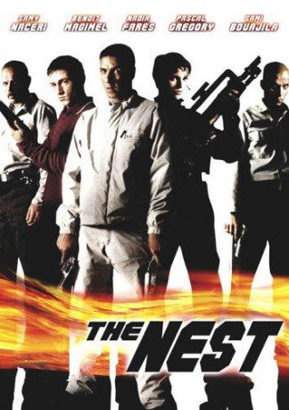
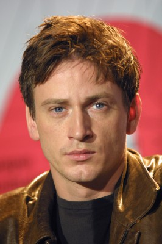
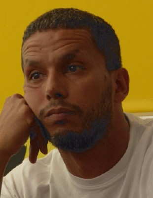
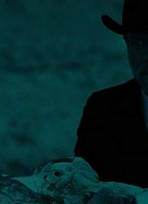

#7534 Das Tödliche Wespennest
 
 IMDB-Wertung: 6.8 / 10
IMDB-Wertung: 6.8 / 10  Metascore: 0
Metascore: 0 
Laborie is a high-flying officer in the French special forces. Her mission is to escort Abedin Nexhep, a godfather of the Albanian mafia. Charged with heading a wide-reaching prostitution network, this formidable criminal is due to stand trial before a European court. During the transfer, killers hired by Nexhep set up an ambush to free their boss but Laborie and her men manage to escape. After a frantic chase, the officers seek refuge, with their prisoner, in a warehouse located in the heart of an industrial park. There they meet up with a gang that has come to steal computer material. Meanwhile, Nexhep's killers surround the warehouse?
Jahr: 2002
Dauer: 107 Minuten
FSK: 18
Land: Frankreich Studio: UFATonspuren:
Untertitel:
Auflösung: 1080p (1916x818) Größe: 11059 MB
Genre: Action, Thriller, Krimi
Regisseur: Florent-Emilio Siri
Drehbuch: Florent-Emilio Siri
Soundtrack:
Darsteller:
- Samy Naceri als Nasser
-  Benoît Magimel als Santino
- Nadia Farès als Helene Laborie
-  Sami Bouajila als Selim
 Richard Sammel als Winfried
Richard Sammel als Winfried- Valerio Mastandrea als Giovanni
-  Pascal Greggory als Louis
- Anisia Uzeyman als Nadia
- Martial Odone als Martial
- Martin Amic als Spitz
- Alexandre Hamidi als Tony
- Angelo Infanti als Abedin Nexhep
- Grigori Manoukov als Le Passager VAB
- Paul Hervet als Vigile 1
- Frédéric Kontogom als Vigile 2
- Frédéric Maranber als Militaire
- Eric Franquelin als Le capitaine
- Bibi Naceri als Employé Ponts et Chaussées
- Jean-Yves Chatelais als Chauffeur XM
- Théodule Carré-Cassaigne als L'enfant XM
- Cyrille Dufaut als Le pilote VAB
- Denis Braccini als Le pompier
- Abdel Kader als Le 2ème pompier
- Régis Quennesson als Le gendarme
- Roxane Nouban als La mamie
- Evelyn Andreani als La mère Santino
- Clement Toinel als Le bébé
- Françoise Laborde als La présentatrice journal télévisé
- Roland Guéridon als La père d'Abedin Nexhep
- Henri Boulet als La grand père Santino
- Axel Arnaud als Le colonel de gendarmerie
Datei: X:\FSK18-2000-2009\Tödliche Wespennest, Das (2002, FSK18, 1916x818).mkv seit 16.11.2017
Festplatte: FSK18
 Es gibt insgesamt 106 Filme in der Gruppe 'FSK18-2000-2009'
Es gibt insgesamt 106 Filme in der Gruppe 'FSK18-2000-2009'